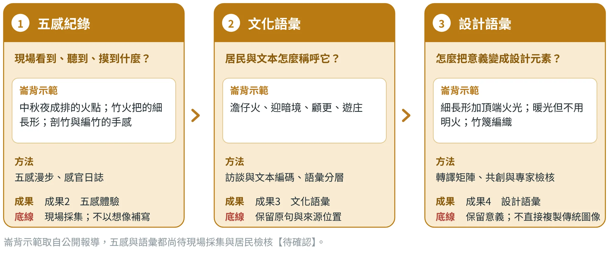
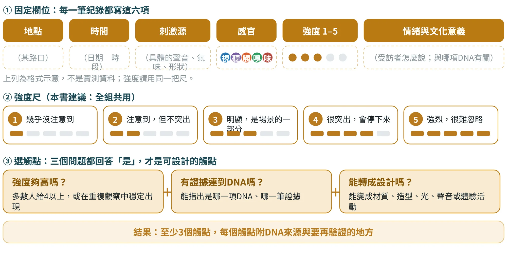
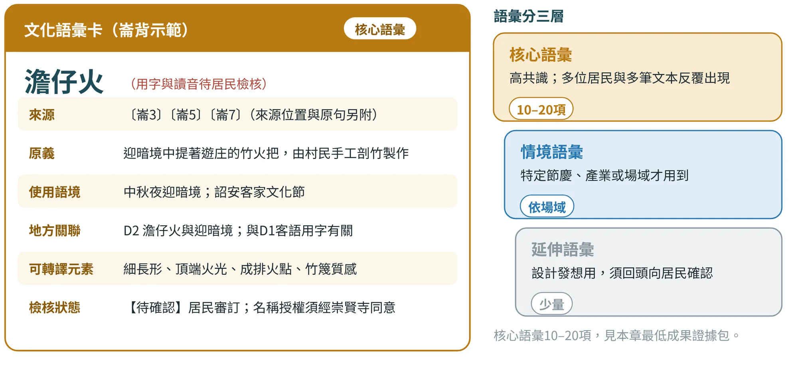
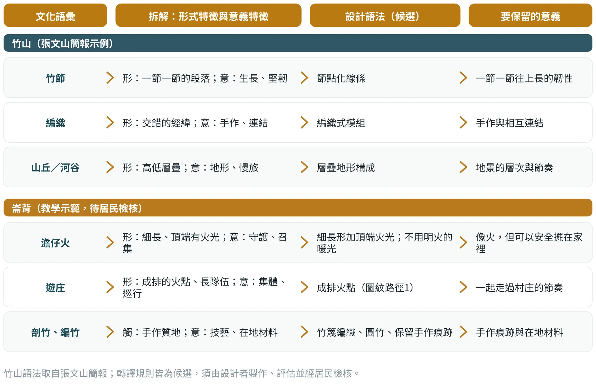

感知與語意
把地方經驗，變成可以設計的詞彙
7.1為什麼要多一層：從DNA到詞彙#
DNA是一個結論：例如「澹仔火與迎暗境」。但設計師無法直接用一個結論畫圖或做商品，還需要更具體的材料：現場是什麼聲音與光線？居民怎麼稱呼它？這些東西換成設計語言，是什麼形狀、什麼材質、什麼顏色？
本章處理的就是這一層（圖7.1），分成三種詞彙：五感紀錄回答「現場看到、聽到、摸到什麼」；文化語彙回答「居民與文本怎麼稱呼它」；設計語彙回答「怎麼把意義變成設計元素」。它們分別對應成果2、3、4，順序不能倒：沒有現場紀錄就談語彙，語彙多半是觀光詞；沒有語彙就談設計，設計多半是外人的想像。

7.2五感漫步：把「地方感」變成可記錄的資料#
張文山的方法特別強調：五感不是形容詞清單，而是「在特定場域、時間、活動中，人的感官如何被觸發」。所以紀錄時要同時寫下刺激來源、情緒、意義與強度。建議的研究方法有：感官民族誌、感官漫步、參與式觀察，與體驗抽樣。對一般專案而言，最容易上手的是感官漫步：
- 選路線與時段：同一條路線，至少走兩個不同時段（白天與夜晚，或平日與節慶日）；感官證據會隨時間改變。
- 分工：一組4–5人，各自負責一種主要感官（視、聽、觸、嗅、味），走完再交換紀錄，降低個人偏見。
- 固定欄位：地點、時間、刺激源、感官、強度1–5、情緒、文化意義。用同一份表（範本03），不要用日記體。
- 不替現場補寫：嗅覺、味覺與聲景必須在現場親自感受；AI與報導都不能代替。
圖7.2把整個流程畫在一起：先固定欄位，再統一強度尺，最後用三個問題篩選觸點。強度尺是「同一組人共用的一把尺」，這樣比較不同地點、不同時段才有意義；若要更有系統地比較，可再加入語意差異量表（例如溫暖—冷冽、熱鬧—寧靜），每種感官用3–5個尺度，而不只問喜不喜歡。

崙背示範（表7.1）受限於只有公開報導，五感線索多半是「待採集」。這張表也是一個很好的示範：它清楚標出哪些有依據、哪些必須現場補，不用想像填滿。
| 感官 | 線索 | 依據 | 轉譯方向 | 狀態 |
|---|---|---|---|---|
| 視覺 | 中秋夜成排的火點；竹火把的細長形；隊伍綿延超過1公里 | 〔崙3〕 | 燈的造型與光點圖紋 | 報導已載；現場照片待拍攝 |
| 聽覺 | 詔安客語的日常對話與合唱 | 〔崙8〕〔崙9〕〔崙10〕 | 故事卡的一句客語與QR音檔 | 現場錄音須取得同意待確認 |
| 觸覺 | 剖竹、編竹的手作質地 | 〔崙6〕〔崙7〕 | 燈罩的竹篾編織、手握的竹柄 | 手感須現場記錄待確認 |
| 嗅覺 | 竹與火的氣味 | 報導未載 | 暫不轉譯，不以氣味作賣點 | 待確認 |
| 味覺 | 擐雞酒的米酒與雞 | 〔崙11〕 | 食品須由合格業者製作，不納入本商品 | 已查證，不採用 |
表中只有報導有依據的項目標為已查證，其餘一律是待採集項目。轉譯方向為教學示範的設計假設示範假設。
把感官線索變成活動：同時寫下要驗證什麼
感官紀錄要變成體驗，需要一個中間步驟：把線索改寫成活動，同時寫下這項活動成立的條件（表7.2）。表中是活動設計的提案，並不代表相關店家已經提供服務。腳本可以用「感知—提問—理解—回應」的節奏：先摸兩種竹材的表面，問差異從哪裡來，再由職人說明工序，最後讓參與者選擇適合自己作品的處理方式。感官不再只是刺激，而是理解地方技藝的入口。
| 示範線索 | 可以設計的活動 | 必須驗證 |
|---|---|---|
| 竹材表面與重量 | 比較未加工與打磨的樣片，說出觸感的差別 | 材料適合觸摸、無尖刺；樣片來源清楚 |
| 鍛打聲與工具用途 | 先聽聲音猜工作，再由職人說明 | 工作時段、錄音同意、觀看的安全距離 |
| 夜巡火光與人群 | 以圖像與口述理解夜巡的集體行動 | 保存者對內容與展示情境的意見 |
| 竹筍食物與日常飲食 | 詢問食材處理，連回產業與季節 | 食材來源、供應狀態與飲食需求 |
五感也需要節制。若每一站都高音量、強氣味或長時間動手，旅客可能疲勞。對部分使用者來說，提供安靜的休息、可以跳過的任務、文字替代，或不必觸摸的說明，反而讓參與更完整；無法或不願使用某一種感官的人，不應被排除在地方理解之外。活動也要有具體的目的與替代方式，不能只是播放與地方無關的背景音樂。
九個案例的五感樣本
五感漫步的結果，要能寫成可以被檢核的句子，而不是漂亮的形容詞。表7.3列出九個案例的五感線索。請注意，它們不是田野記錄，而是依文件與公開資料整理的「樣本」，用來示範五感如何接到後面的語彙與設計；哪些格子是文件裡真的有的、哪些是推想的，要到現場逐格標明。嗅覺與味覺最容易被寫成想像，尤其要注意：居鑾的「煤煙」只是歷史想像，不是現在的氣味。
| 案例 | 視覺 | 聽覺 | 嗅覺 | 味覺 | 觸覺 |
|---|---|---|---|---|---|
| 鳥取 | 砂丘的風紋與滿天星空 | 海風與砂粒滑落的聲音 | 海潮與梨的清香 | 松葉蟹、梨子甜點 | 砂的細粒、和紙纖維 |
| 居鑾 | 老站房與鐵軌的線條 | 列車聲、廣播聲 | 咖啡香與煤煙（歷史想像） | 站內咖啡、美食長廊 | 鐵軌的金屬與枕木的木紋 |
| 怡保 | 石灰岩峭壁與老城壁畫 | 洞穴迴音、錫器敲擊聲 | 白咖啡的烘焙香與洞穴苔蘚味 | 白咖啡、芽菜雞、河粉 | 岩壁的涼與錫器的重量 |
| 斗南 | 倉庫紅磚與鐵軌線 | 列車聲與市集聲 | 醬香、米香 | 米餅、醬油、鴨胸、竹筍 | 甕缸與絲瓜絡的質地 |
| 古坑 | 山田地景 | 水流、風聲與蟲鳴 | 泥土與藤葉 | 稻穗與地瓜 | 土地質感 |
| 土庫 | 廟宇紅瓦與市場木構 | 廟埕鼓聲、市場叫賣聲 | 醬油與花生油的香 | 辦桌菜、醬油、花生 | 檜木與磚的質地 |
| 北港 | 廟宇紅牆與夜間光影 | 鑼鼓、鞭炮與人聲 | 香火、麻油與花生 | 大餅、碗粿、芽菜 | 木構、石雕與香灰 |
| 鹿谷 | 三面環山的茶園梯田 | 茶水注入的聲音、竹林風聲 | 茶香與竹筍的鮮 | 烏龍茶、竹筍、瑞田米 | 茶杯的溫度與陶土質地 |
| 埔里 | 盆地的山稜與水面 | 水聲、紙漿攪動聲、蛙鳴 | 酒香與紙漿味 | 紹興酒、茭白筍 | 紙的纖維與水的涼 |
五感線索為示範假設：依各案例的簡報、提案與公開資料整理，作者未到現場採集；附錄G各案例的A圖版把它們畫成場景，同樣不是實景。
7.3文化語彙：地方人怎麼說自己的地方#
文化語彙不是觀光宣傳用語，而是居民在日常生活、節慶、信仰與產業裡真正使用的詞。它的來源有居民的談話、文史文本、地方事件與碑記。品質判準很清楚：保留原生詞、方言、稱謂與慣用語，並註明語境與使用者。
整理文化語彙，有五個步驟：
- 擷取：從逐字稿、文史文本與居民自由聯想中，找出反覆出現的地方原生詞，並保留原句與來源位置。
- 整併：合併同義詞（例如不同寫法），不能合併的就並列（例如「顧更寮」與「隘丁寮」）。
- 標註語境：這個詞在什麼場合、由誰使用、原本是什麼意思。
- 分層：核心語彙（高共識）、情境語彙（特定節慶或產業）、延伸語彙（設計發想用）。
- 建卡：每個詞寫一張語彙卡，包含來源、原義、地方關聯與可轉譯元素，並寫明是否需要居民再確認。
圖7.3是以「澹仔火」為例的語彙卡與三層分層。「避免只列漂亮名詞」是張文山對語彙卡的要求：每一個詞彙都附上來源、原義、地方關聯與可轉譯元素。

表7.4是崙背示範實際使用的7組語彙。注意最後一欄「檢核狀態」：用字、讀音與授權，都是居民才能審訂的事。
| 語彙 | 意涵（依報導） | 來源 | 在商品的用法 | 檢核狀態 | |
|---|---|---|---|---|---|
| 澹仔火 | 迎暗境中提著遊庄的竹火把，由村民手工剖竹製作 | 〔崙3〕〔崙5〕〔崙7〕 | 品名「澹火夜行」（暫名）與主視覺 | 用字與讀音待居民檢核待確認 | |
| 迎暗境 | 中秋夜居民提火把遊庄的民俗；2025年1月登錄為雲林縣民俗 | 〔崙2〕〔崙3〕 | 故事卡；名稱使用須經崇賢寺同意 | 待確認授權；起源年份不採 | |
| 顧更 | 先民夜裡持火把守護家園 | 〔崙4〕〔崙7〕 | 故事卡的動詞：「提火把顧更、巡庄」 | 已查證；用字待檢核 | |
| 顧更寮 | 村民搭建、供巡更的寮舍 | 〔崙3〕〔崙7〕 | 背景說明，不作品名 | 寫法不一（顧更寮／隘丁寮）待確認 | |
| 遊庄 | 提著火把繞行村庄 | 〔崙3〕 | 故事卡 | 已查證 | |
| 開口獅／開嘴獅 | 詔安客家三寶之一；2023年崇賢寺有3公尺高的竹編開口獅裝置 | 〔崙5〕〔崙6〕〔崙19〕〔崙20〕 | 副線DNA的視覺線索；本商品暫不使用獅形 | 兩種寫法並存，採單一寫法前向文化館確認待確認 | |
| 四點金 | 擐雞酒中雞頭、雞尾椎、雞腳、雞翅的合稱 | 〔崙11〕 | 延伸DNA D6；本商品不使用 | 已查證（單一來源） | |
常見錯誤 初學者容易犯的錯
| |||||
7.4設計語彙：把文化意義轉成形、色、材與互動#
設計語彙是文化語彙的「可操作版本」。它的方法是先把一個文化象徵拆成兩種特徵：形式特徵（看得到的形狀、線條、材質、比例）與意義特徵（它代表什麼）；再為形式特徵設計抽象化規則，使意義被保留下來。這樣做，設計不會直接複製傳統圖像，而是把地方的邏輯提煉出來。
圖7.4用竹山與崙背兩個案例，示範這個轉譯。竹山的「竹節、編織、山丘／河谷」，轉成了「節點化線條」「編織式模組」「層疊地形構成」三種設計語法〔張文山簡報〕；崙背的「澹仔火」「遊庄」「剖竹、編竹」，則轉成細長形加火光、成排火點與竹篾編織的候選規則。

張文山的方法提醒兩件事：第一，每個核心DNA最好產出2到3種可變形的設計元素，而不是只有一個Logo；第二，每個核心語彙至少提出3種抽象化規則，分別對應形、線、材質、構成與互動，並說明文化意義如何被保留。崙背示範依此歸納出三條造型規則：
| 規則 | 內容 | 刻意不做的事 |
|---|---|---|
| 造型 | 取竹火把的細長形與頂端的火光 | 不取廟宇、神明或神轎的形象 |
| 材質 | 以竹篾編織與圓竹為主，保留手作痕跡 | 不用仿竹的塑膠材質充當手作 |
| 光 | 以不用明火的暖光表現，做到「像火，但可以安全擺在家裡」；大面積用夜藍與牛乳白承擔 | 不使用明火，也不以閃爍特效模仿民俗 |
前三列的規則依崙背示範說明書整理；「刻意不做的事」欄為本書依權利與適切性原則補充示範假設。
| 欄位 | 說明 |
|---|---|
| 文化語彙 | 來自成果3，附來源編號與檢核狀態 |
| 意義特徵 | 這個詞代表什麼；例如守護、召集、手作、連結 |
| 形式特徵 | 看得到的形狀、線條、比例、材質與色彩 |
| 抽象化規則（至少3種） | 形、線、比例、色彩角色、材質、肌理、構成、互動；每一條寫成可以照做的規則 |
| 如何保留意義 | 這條規則為什麼仍然像這個地方；寫出理由 |
| 刻意不做的事 | 不複製的傳統圖像、不碰的宗教或私人象徵、尚待授權的項目 |
| 檢核結果 | 地方辨識度、文化適切性、當代可用性的評分與修正 |
形態盒：一次只改一組設計變項
要讓發散有結構，可以用形態盒：把方案拆成幾個變項，再列出每個變項的選項，避免三個概念只是同一個商品換三種顏色。設計者要先確認，哪些變項可以自由更動，哪些涉及文化意義或安全而有界線。崙背小夜燈可以探索火點、細長輪廓與圍合光影三條路徑，分別強調夜色中的點光、火把的形態與共同巡行的關係；哪一條適合，不只看美感，也要請地方的關係人說出他們理解的意義。表7.7把四個文化線索各拆成三條路徑，同時寫下需要避免的事。
| 文化線索 | 保留的關係 | 設計路徑 | 需要避免 |
|---|---|---|---|
| 竹節 | 分段與生長的節奏 | 線條節點／分段收納／組裝順序 | 把所有條紋都說成竹節 |
| 編織 | 交錯與相互支撐 | 模組交織／鏤空表面／共同製作 | 未經說明複製特定作品 |
| 澹仔火 | 夜巡火光與集體行動 | 點光節奏／細長輪廓／分享故事 | 把紀念燈當成儀式器物 |
| 地方語言 | 說話者與日常的使用情境 | 聆聽卡／情境任務／可更新的音檔 | 由AI編造拼音或發音 |
從形容詞改成規則
「有手作溫度」還不是規格。可以改寫成：「保留可見的編織交點，表面去除尖刺，不用厚塗層完全覆蓋纖維；個體之間允許小幅差異，並定義可接受的範圍。」這樣才有辦法與職人、工廠和使用者溝通。
規則也要允許變體。例如主紋樣保持相同的交錯角度，密度依包裝紙、卡片與袋面調整；主色的角色維持不變，強調色只出現在操作提示或關鍵的故事上。這比要求所有物件長得一模一樣，更能形成有延展性的系統。
7.5共創與檢核：設計語彙要拿去給人看#
設計語彙是設計者的詮釋，詮釋就需要被檢驗。張文山的方法建議用居民共創工作坊、設計師與文史專家評估，以及卡片分類（Card Sorting）來完成，並且固定檢查三件事：
| 檢核項目 | 問什麼 | 怎麼做 |
|---|---|---|
| 地方辨識度 | 看到這個元素，居民與外地人能不能認出是這個地方？ | 給居民與外地人看元素卡，請他們分類與命名，比較兩者的差異 |
| 文化適切性 | 會不會冒犯？有沒有碰到宗教、族群或私人記憶的禁忌？ | 請地方組織、文史專家與保存者審查，記下反對與保留意見 |
| 當代可用性 | 放到包裝、商品與數位介面上，是否好看、好懂、好用？ | 以原型或情境圖給目標客群評分（5點量表加開放意見） |
三項裡，文化適切性最重要，也最容易被忽略：只要有居民或保存者認為「這樣不對」，就要先停下來，回到第15章的權利與倫理檢視，而不是繼續修飾視覺。
7.6AI協作：整理與發散，不替你決定#
這一階段AI最有用，也最容易出錯。AI可以幫你把五感紀錄分群、為語彙建議合併、列出多種設計轉譯；但它沒有在現場，不會知道居民怎麼說，也不能替你決定哪一個詮釋才適當。三段提示詞各有一道防線：
將我提供的五感漫步與觀察紀錄依地點、時間、刺激源、視／聽／嗅／味／觸、強度1–5、情緒與文化意義整理；比較不同場域或時段，找出最具辨識度的感官觸點，並說明其可轉為體驗設計的方式與DNA來源。只依據我提供的紀錄；沒有紀錄的感官標「待採集」，不要補寫氣味、聲音或味道。
提示詞出自張文山〈AI協作Prompt增補版〉（2026-10-06修訂，第三版-2）的「五感體驗」；最後一句為本書依同一原則補充。
請從我提供的逐字稿、文史文本與居民自由聯想中擷取地方原生語彙，保留原句與來源位置；合併同義詞並依核心／情境／延伸分層，輸出詞頻／共現線索、文化意義、使用語境與需居民再確認項目。不要加入一般觀光用語；方言的用字與讀音一律標「待居民審訂」。
提示詞出自同一份文件的「文化語彙」；最後一句為本書補充。
以已驗證的文化語彙為輸入，建立「文化意義→形／線／比例／色彩角色／材質／肌理／構成／互動」轉譯矩陣。每個核心語彙至少提出3種抽象化規則，說明如何保留意義；不得直接複製傳統圖像或替代設計者的最終判斷。請另列「刻意不做的事」與需向居民或專家確認的風險。
提示詞出自同一份文件的「設計語彙」；最後一句為本書補充。AI產出的規則，仍須由設計者選擇、繪製與測試，並經居民檢核。